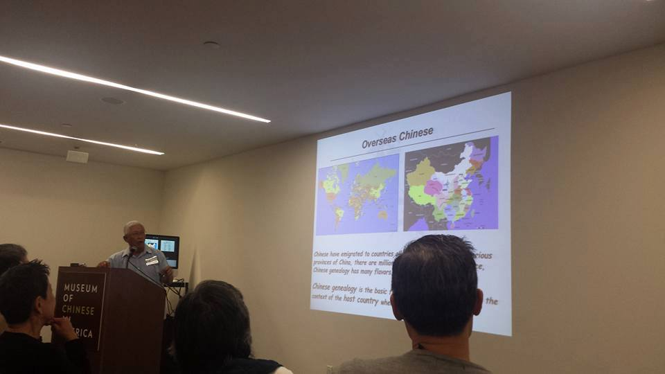
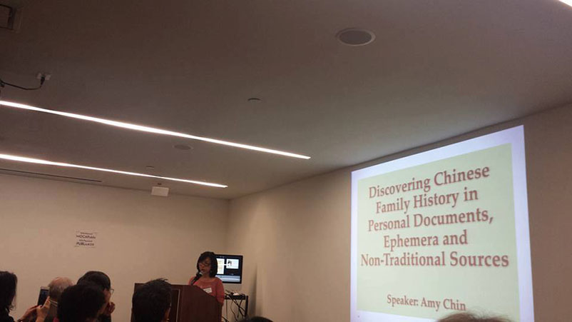
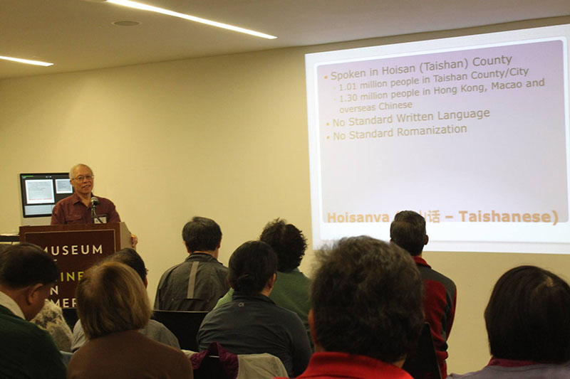
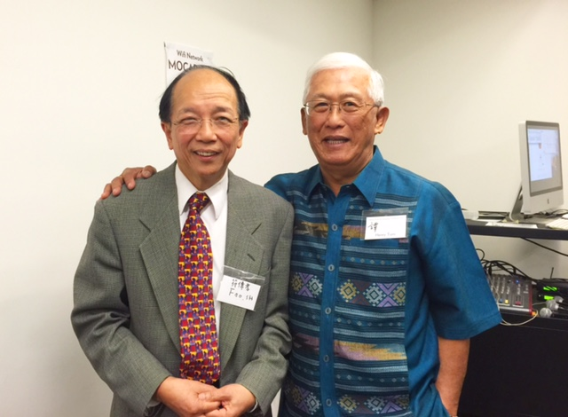
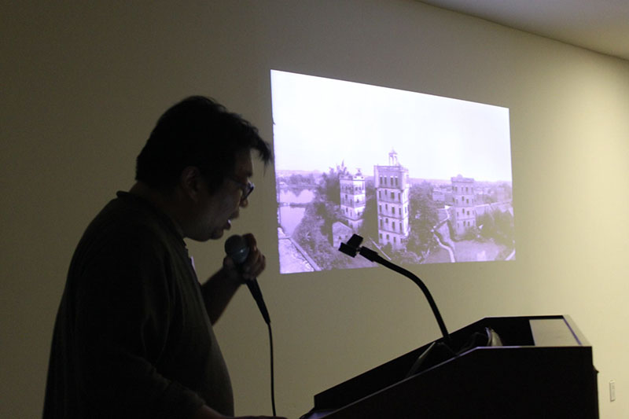
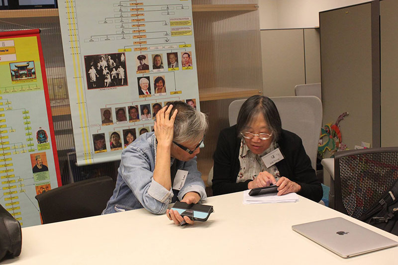
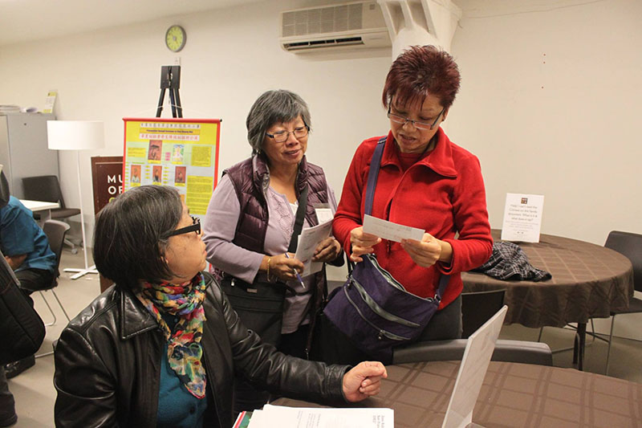
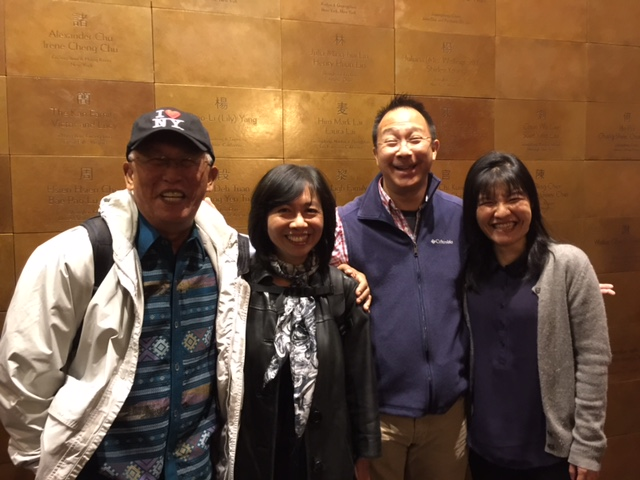

Tony King talks Chinese 'jiapu' (genealogy books).

Henry Tom giving an overview of principles and practices of Chinese American genealogy (photo by Wing-kai To).
Tony King talks Chinese 'jiapu' (genealogy books).

Amy Chin starting her presentation on less traditional ways to approach genealogy research (photo thanks to Wing-kai To)

Gene Chin talks about Hoisanva.

Dr. Sun Hoo Foo and Henry Tom. Dr. Foo discusses how he traced his lineage back 73 generations.

Alan Chin showing his fab photos of Taishan and speaking about his family's immigration journey.

Karen Low helping with genealogy searches and translations during a break-out session.

Mee Mee Chin helping with genealogy searches and translations.

These are the ones who made the event possible: Henry Tom, Amy Chin, Patrick Chew and Beatrice Chen.
Thank you.